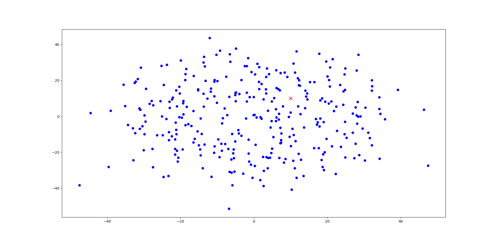
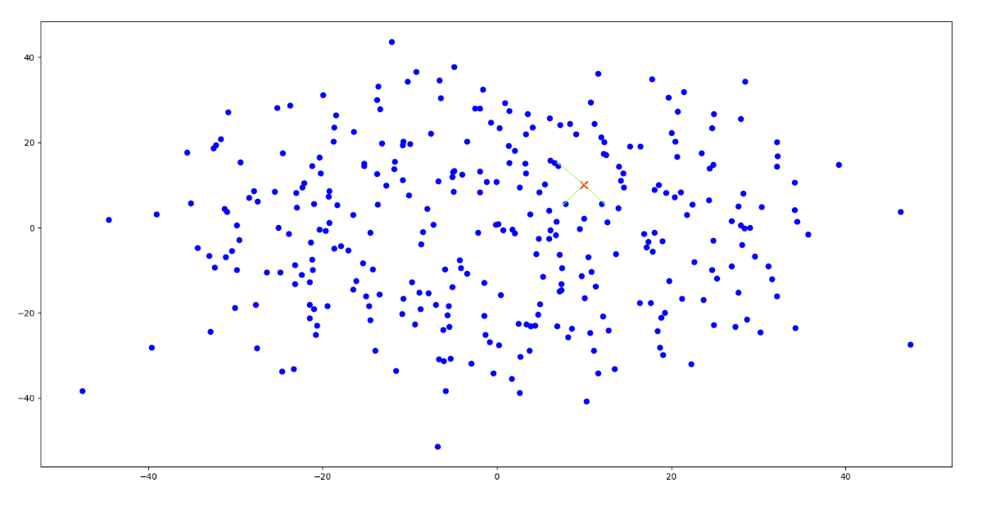

Basics of k-Nearest Neighbours
7 Jul, 2018
While several complex algorithms have been developed for the purpose of solving classification and regression tasks in Machine Learning, there are cases in which simple algorithms work well and give satisfactory results with low training time. One such algorithm is the k-Nearest Neighbours algorithm. The idea of a k-NN is simple: "If it walks like a duck, quacks like a duck, then it is a duck."
Wikipedia gives a great definition for the k-Nearest Neighbours algorithm:
"The k-nearest neighbors algorithm (k-NN) is a non-parametric method used for classification and regression. In both cases, the input consists of the k closest training examples in the feature space."
Here, non-parametric means that the algorithm does not have any parameters that play a role in the classification or regression, unlike most other algorithms such as Linear Regression, Logistic Regression or any kind of Neural Network.
The algorithm
We can assume the input to be a instance of real features, \(T(X_1, X_2, X_3, ..., X_n)\), as in the case of any predictive Machine Learning algorithm. In both classification and regression, we try to determine the value of a target variable, say \(Y\).
In case of regression, \(Y\) can be a real valued variable which is supposed to depict as accurately as possible the value that \(Y\) takes given the values of \(Y\) for other instances. In case of classification, \(Y\) is typically a whole or natural number denoting the class that the given instance can fall in.
k-NN for classification
- Plot all given instances \(T_1, T_2, ..., T_n\) in the data in \(m\)-dimensional space.
- Plot the newly given instance, \(T\) in \(m\)-dimensional space.
- Select the \(k\) nearest neighbours of \(T\) in this space using a distance metric (such as Euclidean distance).
- Select the majority class among these \(k\) nearest instances.
k-NN for regression
- Plot all given instances \(T_1, T_2, ..., T_n\) in the data in \(m\)-dimensional space.
- Plot the newly given instance, \(T\) in \(m\)-dimensional space.
- Select the \(k\) nearest neighbours of \(T\) in this space using a distance metric (such as Euclidean distance).
- Compute the value of \(Y\) using any central tendency such as mean, weighted mean, etc.
Take for example the following dataset where each sample is projected in 2-dimensional space. The red "X" represents the test instance.
Say for example that we are using 3-NN, i.e., we choose 3 closest points to the test instance as follows:
The algorithm for classification and regression differs only in the last step. If the above were a classification task, with the points belonging to one of two classes (say \(0\) or \(1\)), and if 2 of the 3 closest samples belong to class \(0\), then the test instance will be predicted as belonging to class \(0\). If 2 of the 3 closest samples belonged to \(1\), then the prediction would be \(1\). If the task was regression, and we needed to find the value of \(Y\) for the test instance and the values of \(Y\) for the 3 nearest neighbours were \(10.0\), \(11.0\) and \(14.0\), then the value of \(Y\) would be predicted as:$$Y = (10.0 + 11.0 + 14.0) / 3 = 11.6667$$
While this algorithm is quite intuitive, there are several things we would need to think of before setting out to achieve the best performance.
Lazy vs Eager Learners
Learning algorithms can be divided into Lazy and Eager learners depending on their "overall understanding" of the data as follows:
Lazy learners simply store the training data (often after minor preprocessing) and wait for a test instance is given. The prediction is made based on the stored data. (Eg. Rote learners, k-NN, etc.)
Eager learners learn the data by creating a model based on it. This model is supposed to depict the data and the patterns and relations in it as closely as possible. The prediction is made based on this model. (Eg. Logistic Regression, Support Vector Machines, Neural Networks, etc.)
So k-NN is a lazy learner. It stores data and simply makes predictions based on some calculation involving part of the data and the instance. We now go through each step and understand what parts of the algorithm we can tweak to make it perform better.
Optimising the model
While there's nothing consequential to change in steps 1 and 2 of the algorithm, it is possible to change several key parts of steps 3 and 4.
Distance Metric
To know which k instances are closest to the test instance, we'll need a distance metric to measure how different two instances are. There are several distance metrics which can be used depending upon the nature of the data and problem at hand.
Euclidean Distance. The most commonly used distance metric. The Euclidean Distance between two points, \(A(a_1, a_2,..., a_n)\) and \(B(b_1, b_2,..., b_n)\) is given as $$D_{A, B} = \sqrt{\sum _{i=1}^{n}(a_i - b_i)^2}$$
Manhattan Distance. We can also use the Manhattan distance (also known as City Block distance). There are some claims that this metric works better for high dimensional data, as in this paper. This distance is given by $$D_{A, B}=\sum _{i=1}^{n}\left|a_i - b_i\right|$$
Hamming Distance. In the case when \(X_1, X_2,..., X_n\) are binary variables (can only take values \(0\) or \(1\)), the Hamming distance can be used. This is given by $$D_{A, B}=\sum_{i=1}^{n}I_i$$ where $$I_i = \begin{cases} 1, if a_i = b_i \\ 0, otherwise\end{cases}$$
Value of k
This is the most important factor to consider and the only hyperparameter of the algorithm. How many nearest samples should we choose to make sure that a new instance gets classified correctly? Intuitively we can tell that the number shouldn't be too less or too many. Let's try to get an idea what happens when we choose different values for \(k\).
\(k\) is too small. Highly variable, unstable boundaries, sensitive to noise points and overfitting. Lets take \(k = 1\) for a classification task where \(Y\) can be \(0\) or \(1\); this is basically a \(1\)-NN. This model will output \(0\) if the nearest neighbour to the test instance is a \(0\) and \(1\) if it is a \(1\). It might not take much to figure out that this is not be a good choice of \(k\) as it is very easy for instances to get misclassified.
k is too large. Neighborhood may contain more instances from other classes, and thus the test instance can be easily misclassified. In case of a class imbalance and a large value of \(k\), the predictions will tend to favour the majority class.
k is infinite. This means that the k-NN always predicts the dominant class in the dataset. It is actually the same as a Zero-R rule-based classifier.
Unfortunately there's no standard way of determining the right value of \(k\) just by looking at the data. The best way to determine \(k\) is by using a validation set.
Central Tendency for regression
If it is a classification task, it doesn't make sense to change Step 4. Clearly, the majority class should be predicted as it gives the best depiction of the instances around the test data. If it is a regression task, however, we may change the central tendency used to compute the value of \(Y\).
Mean. Usually the mean of the values of the \(k\) nearest neighbours is used to determine the value of \(Y\). $$Y = \frac{\sum_{i=1}^{k}Y_i}{k}$$ where \(Y_1,..., Y_k\) are the values of \(Y\) for the \(k\) nearest neighbours.
Weighted mean. Alternatively, we can find the weighted mean of the neighbours, the weights being the reciprocals of their distances from the test instance.$$Y=\frac{\sum_{i=1}^{k}D_i.Y_i}{\sum_{i=1}^{k}D_i}$$ where \(D_i\) is the reciprocal of the distance from the test instance to sample with label \(Y_i\)
Other measures such as Median, Mode, weighted mean with weights are probabilites of the classes and so on can also be used.
Pros and Cons
While k-NN sounds very simplistic compared to most of the Eager learners, it has its set of advantages.
- It can be used on data having any kind of distribution, most importantly, the data need not be separated by a linear kind of boundary to carry out the classification.
- It is good at interpolation, if we have a large number of training instances.
- The setup time is very low compared to the training time that eager learners have.
However, it also has some issues that need to be considered before recognizing as the model of choice for any task.
- Scalability: Usually, if a particular feature has a much higher value than the other features, it dominates the value of the distance in case of Euclidean distance. This would mean that some features would decide what the value of \(Y\) is much more than the others, which might not be the case in reality. Normalising the data samples to a range like \([0, 1]\) can help mitigate this issue.
- High compute time for prediction on test sample: This particular condition might be agreeable in some cases. For instance, if the problem entails predicting if a patient has cancer or not, prediction time is not of essence here, but if the problem is to find if an incoming projectile is a rock or a missile, time is highly critical. Of course, there are far better models than \(k\)-NN for solving either of these problems.
- It only works properly if there are a large amount of samples available. While it is good at interpolation, it is bad at extrapolation of values.
Finally, while k-NN might not be used as often as any popular algorithms in Machine Learning, it gives a good level of intuition about how other algorithms can be designed, especially some unsupervised algorithms.